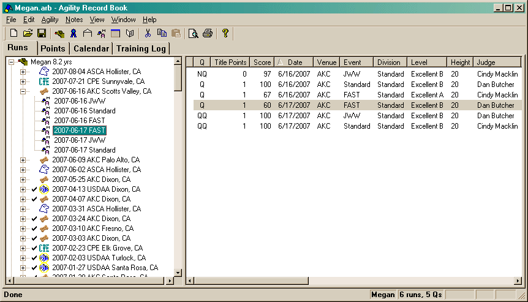

The Runs tab is made up of two main windows. The view on the left is known as the Tree, the one on the right is the Runs list.

When you select an run in the tree, the run will also be highlighted in the right side. The view that currently has focus will have the selected item drawn more visibly (in the above picture, the left view has focus).
If you right-click on an item (or press the "Window Menu" key on the keyboard), one of 3 (dog, trial, run) different context menus will appear allowing you to perform a number of actions.
Also, double-clicking on an item (in either window), will bring up one of 3 (dog, trial, run) different dialogs (the Properties item in the context menu will do the same thing).